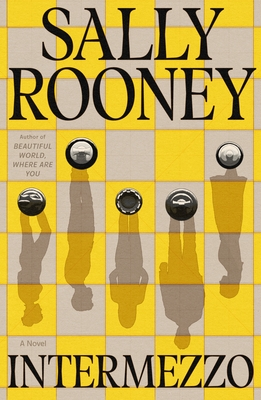

Intermezzo
Intermezzo is a literary novel about grief, family, and complicated love in modern Ireland. After the death of their father, two very different brothers—Peter, a thirty-something Dublin lawyer, and Ivan, a twenty-two-year-old former chess prodigy—find their lives diverging in unexpected ways. Peter struggles with insomnia, guilt, and tangled relations.